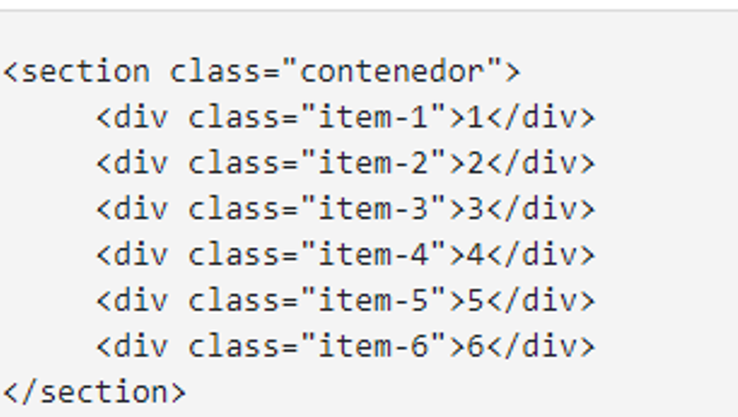
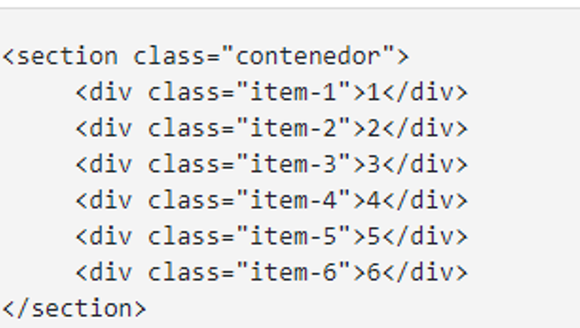

ETIQUETAS SEMANTICAS
Las etiquetas semánticas son reconocidas por entregar la información correspondiente sobre lo que se pretende hacer dentro de la página, como ejemplo párrafo se muestra la etiqueta, la cual mas adelante vamos a definir, es decir estas etiquetas al leerlas ya se sabe que contienen y para que van a ser usadas.
Dentro de estas etiquetas encontramos unas denominadas estructurales que oportunamente que dan la estructura al documento HTML, se visualiza primero una organización adecuada para tener una adecuada coordinación de la información dentro de las cuales se puede mencionar FOOTER, SECTION, ARTICLE
HGROUP: Etiqueta usada para agrupar adecuadamente un conjunto de uno a mas elementos de encabezados
NAV: Se usa para definir un parte del documento indicando un espacio que sirve para designar la navegación de un menú.
ARTICLE: Define una parte de la pagina a parte de la pagina indicando que la información de forma independiente al contenido de la página.
SECTION: Nos dará la oportunidad de ingresar información como un nuevo capítulo, de allí se debe tener en cuenta los datos que podemos agregar dentro de la página.
ASIDE: Permite agregar información que no hace parte de la pagina pero que sirve agregar sectores con información adicional.
FOOTER: Sirve para establecer el pie de página de la página para incluir información de contacto, referencias y otros.
NAV: Se usa para definir un parte del documento indicando un espacio que sirve para designar la navegación de un menú.
ARTICLE: Define una parte de la pagina a parte de la pagina indicando que la información de forma independiente al contenido de la página.
SECTION: Nos dará la oportunidad de ingresar información como un nuevo capítulo, de allí se debe tener en cuenta los datos que podemos agregar dentro de la página.
ASIDE: Permite agregar información que no hace parte de la pagina pero que sirve agregar sectores con información adicional.
FOOTER: Sirve para establecer el pie de página de la página para incluir información de contacto, referencias y otros.
CSS GRIDD
Es un sistema de maquetación que permite una estructuración tipo cuadricular, para organizar de forma práctica los elementos que integran el diseño de la página WEB, según sea las necesidades del cliente, esto siendo soportado por casi todos los navegadores. Con ventajas de flexibilidad, menos códigos y menos bugs, optimización de recursos, responsive más sencillo.
Estas opciones una facilidad para optimizar los procesos de codificacion de pagina web un ejemplo de ello es la creacion de un contenedor con el siguiente ejemplo: 
Estas opciones una facilidad para optimizar los procesos de codificacion de pagina web un ejemplo de ello es la creacion de un contenedor con el siguiente ejemplo: 
Attardi, J. (2020). CSS Grid. In Modern CSS (pp. 255-280). Apress, Berkeley, CA.